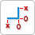
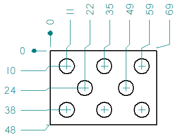

Coordinate Dimension command
The Coordinate Dimension command

manually places ordinate dimensions, which measure the distance from a common origin to one or more keypoints or elements. Use ordinate dimensions to dimension to a common origin or zero point. You can place the dimensions in any order and on either side of the origin.
Ordinate dimension orientation
You can change the orientation of the dimension measurement lines using the Orientation options on the Dimension command bar. For coordinate dimensions, you can use the following options.
|
Use this Orientation option |
To place |
|
Horizontal/Vertical
|
Dimensions that are parallel or perpendicular to the horizontal edge of the drawing sheet or reference plane. |
|
Use Dimension Axis
|
Dimensions that are parallel or perpendicular to the element that you select as the
dimension axis using the Dimension Axis option Use this option when the default horizontal and vertical axes are not appropriate for the geometry that you are dimensioning, or when you want the dimensions to reference different origins in the same drawing view. For more information, see Place a dimension using a dimension axis. |
|
Use Coordinate System
|
Dimensions that reference the coordinate system and axis that you select on the General tab (Drawing View Properties dialog box). For more information, see Place a coordinate dimension using a coordinate system. |


 on the command bar.
on the command bar. 
How do I
Place coordinate dimensions automaticallyPlace a coordinate dimension
Place a coordinate dimension using a coordinate system
Place an angular coordinate dimension
Place coordinate dimensions between drawing views
Change the origin dimension in a coordinate dimension group
Change the coordinate origin value
Learn more
Ordinate dimensionsCoordinate dimension alignment sets
Adding and removing jogs on coordinate dimensions
Look up more details
Dimension command barCoordinate dimension handles
Automatic Coordinate Dimension command
Automatic Coordinate Dimension command bar
Keypoint Options dialog box
Angular Coordinate Dimension command
Change Coordinate Origin command
Lines and Coordinate tab (Dimension Style and Dimension Properties)